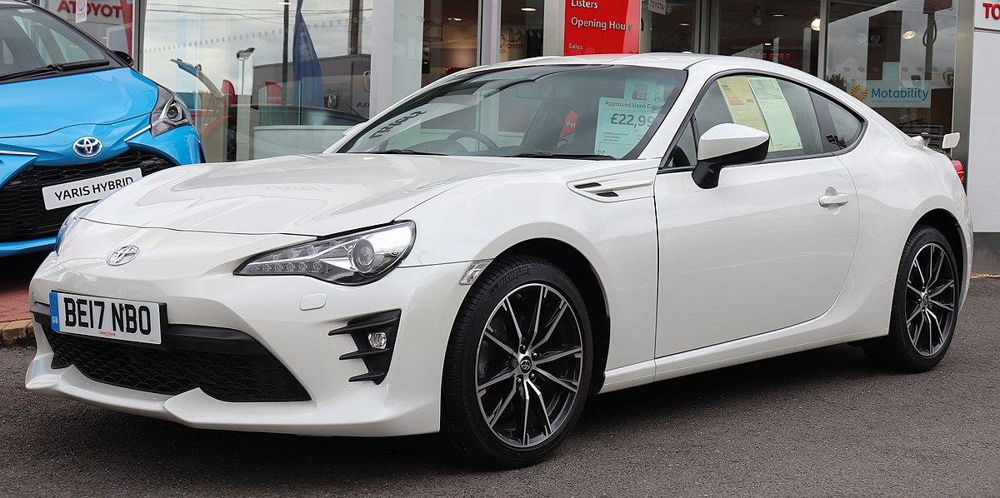

Mobil Sport Toyota
Toyota Supra

Toyota Supra adalah legenda dalam dunia mobil sport. Dengan desainnya yang elegan, mesin yang kuat, dan teknologi canggih, Supra adalah mesin kinerja sejati. Tersedia dengan mesin inline-six turbocharged, Supra memberikan akselerasi yang mendebarkan dan penanganan yang tepat. Interior dirancang dengan pengemudi sebagai fokusnya, dilengkapi dengan kursi sport, kokpit yang berfokus pada pengemudi, dan opsi infotainment canggih.
Toyota 86
Toyota 86 adalah mobil sport kompak yang menawarkan keseimbangan sempurna antara kekuatan dan kegesitan. Dengan desainnya yang ringan dan tata letak penggerak roda belakang, 86 memberikan pengalaman mengemudi yang dinamis. Mesin empat-silinder 2.0-liter memberikan cukup tenaga, sementara suspensi yang dituning untuk performa dan respons kemudi yang cepat membuat setiap perjalanan menjadi menyenangkan. Eksterior stylish dan interior yang berfokus pada pengemudi menambah daya tariknya.
Toyota GR Supra

Toyota GR Supra membawa Supra legendaris ke level baru. Dengan mesin yang lebih kuat, fitur performa yang ditingkatkan, dan desain yang agresif, GR Supra dirancang untuk performa tertinggi. Mesin inline-six turbocharged GR Supra memberikan akselerasi yang mendebarkan, sementara rangka dan suspensi yang canggih memastikan penanganan yang tepat. Desain bold GR Supra, dengan postur lebar dan garis-garis yang diukir, membuat pernyataan yang kuat di jalan.